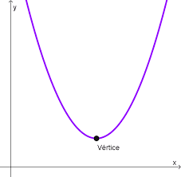
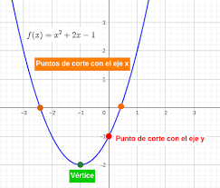

Cálculo de vértices
El vértice es el punto más alto o más bajo de una parábola, luego son el máximo o mínimo de dichas funciones. Son importantes ya que indican donde cambia la parábola. Para obtener su expresión \( (x_v,y_v) \) se hace lo siguiente:
- \(x_v= -\frac{b}{2a} \)
- \(y_v= ax_v^2 +bx_v +c\)
El vértice marca un eje de simetría de tal forma que la variable y tiene el mismo valor tanto a izquierda como a derecha del vértice.

Cálculo de puntos de corte
Los puntos de corte son los puntos donde la gráfica de una función interseca (corta) los ejes del plano cartesiano.
- Punto de corte con el Eje x: Igualar la función a 0, lo que ofrece una ecuación de segundo grado. Dichos puntos de corte se escriben de la forma \((p,0)\),\((q,0)\) donde \(p\) y \(q\) son las soluciones de la ecuación de segundo grado.
- Punto de corte con el Eje y: Evaluar la función a 0. Se escribe de la forma \((0,d)\) donde \(d\) es el valor de la función tras evaluar en 0.

23. Escapando de las funciones cuadráticas
Ayuda, una función cuadrática me ha atrapado. Resuelve estas cuestiones sobre ecuaciones cuadráticas y rescátame.
La clave se compone de cuatro dígitos, uno por cada pregunta. Concretamente, debeis anotar el valor que toma la variable y en cada solución.
¿Cuál es el valor de la función \(y=x^2+2x+1\) cuando \(x=-2\)?
¿Cuál es el punto de corte de la función \(y=(x-2)^2\) con el Eje X?
¿Cuál es el punto de corte de la función \(y=x^2-3x+3\) con el Eje Y?
¿Cuál es el vértice de la función \(y=x^2-2x+5\)
24. Formulario
Vamos a comprobar si dominas las funciones cuadráticas. Responde estas preguntas y demuestra que eres el rey de las parábolas: